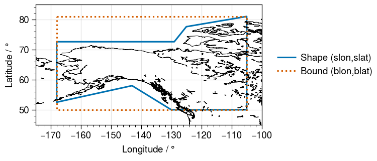

A Basic Primer to GeoRegions
In essence, a GeoRegion is:
- a geographical region that can be either rectilinear region (
RectRegion), or a polygonal shape within a specified rectilinear bound (PolyRegion). - identified by a
regID - itself a subregion of a parent
GeoRegion(identified byparID, which must itself be a validID)
When using GeoRegions.jl, the default GeoRegion should generally be the global domain, specified by GLB and given by the [N,S,E,W] coordinates [90,-90,360,0]. The Global GeoRegion GLB is considered to be a subset of itself.
See the documentation for GeoRegions.jl for more details on what GeoRegions are, and the GeoRegions.jl package.
An Example of a GeoRegion
In GeoRegions.jl, there are three sets of predefined GeoRegions:
- Adapted from Giorgi & Francisco [2000], with a
regIDcreated by adding theGF_prefix to the IDs in the paper - Adapted from Seneviratne et al. [2012], with a
regIDcreated by adding theSRX_prefix to the IDs in the paper - Adapted from Iturbide et al., [2020], with a
regIDcreated by adding theAR6_prefix to the IDs in the paper
All GF_* domains are defined only in versions ≥1.1, while SRX_*and AR6_* domains are defined only in versions ≥2. This should not be a problem, because NASAPrecipitation.jl requires GeoRegions v2.1 and above.
Now, let us plot an example GeoRegion
julia> using NASAPrecipitationjulia> blon,blat,slon,slat = coordGeoRegion(GeoRegion("AR6_NWN"))[ Info: 2021-08-09T06:48:40.117 - GeoRegions.jl - Retrieving information for the GeoRegion defined by the ID AR6_NWN [ Info: 2021-08-09T06:48:40.142 - GeoRegions.jl - Checking to see if the ID AR6_NWN is in use [ Info: 2021-08-09T06:48:40.142 - GeoRegions.jl - The ID AR6_NWN is already in use ([-168.0, -105.0, -105.0, -168.0, -168.0], [81.0, 81.0, 50.0, 50.0, 81.0], [-105.0, -130.0, -143.0, -168.0, -168.0, -129.0, -125.0, -105.0, -105.0], [50.0, 50.0, 58.0, 52.5, 72.6, 72.6, 77.6, 81.0, 50.0])
Here, blon and blat denote the longitude and latitude coordinates of the rectangular domain that bounds the GeoRegion, while slon and slat define the actual GeoRegion itself.

How GeoRegions are used in NASAPrecipitation.jl
When a GeoRegion is specified, it can be one of two categories:
- A rectilinear GeoRegion are denoted by the
RectRegiontype - A polygonal GeoRegions are denoted by the
PolyRegiontype
In a RectRegion, the bounds and the shape define the same area. This is not true for a PolyRegion (see the figure below). When a GeoRegion is called, NASAPrecipitation.jl will create a grid that spans the bounds of the GeoRegion (red dots), but will only download valid data in the shape of the GeoRegion (blue dots).

NASAPrecipitation.jl reexports GeoRegion.jl
For ease of use, NASAPrecipitation.jl reexports all the functionality of GeoRegions.jl.
By default, NASAPrecipitation.jl will download all available data. This means
- For
IMERGDatasets, the data spans 89.95ºS to 89.95ºN - For
TRMMDatasets, the data spans 49.875ºS to 49.875ºN - For the TRMM Land-Sea Mask, the data spans 89.875ºS to 89.875ºN
In NASAPrecipitation.jl, we therefore define the GeoRegions GPM, TRMM and TRMMLSM in order to ensure that bounds of the GeoRegion we request do not go out of bounds of what is available. Upon loading NASAPrecipitation.jl for the first time during any Julia session, NASAPrecipitation.jl will check if these three GeoRegions exist. However, one can check if they exist at any point (and recreate them if they don't) using the function addNPDGeoRegions()
julia> using NASAPrecipitationjulia> GeoRegion("IMERG")[ Info: 2021-08-09T06:48:40.747 - GeoRegions.jl - Retrieving information for the GeoRegion defined by the ID IMERG [ Info: 2021-08-09T06:48:40.748 - GeoRegions.jl - Checking to see if the ID IMERG is in use [ Info: 2021-08-09T06:48:40.748 - GeoRegions.jl - The ID IMERG is already in use The Rectilinear Region IMERG has the following properties: Region ID (regID) : IMERG Parent ID (parID) : GLB Name (name) : Global IMERG Dataset Bounds (N,S,E,W) : [89.95, -89.95, 360.0, 0.0] (is180,is360) : (false, true)julia> GeoRegion("TRMM")[ Info: 2021-08-09T06:48:40.934 - GeoRegions.jl - Retrieving information for the GeoRegion defined by the ID TRMM [ Info: 2021-08-09T06:48:40.935 - GeoRegions.jl - Checking to see if the ID TRMM is in use [ Info: 2021-08-09T06:48:40.935 - GeoRegions.jl - The ID TRMM is already in use The Rectilinear Region TRMM has the following properties: Region ID (regID) : TRMM Parent ID (parID) : GLB Name (name) : Global TRMM Dataset Bounds (N,S,E,W) : [49.875, -49.875, 360.0, 0.0] (is180,is360) : (false, true)julia> GeoRegion("TRMMLSM")[ Info: 2021-08-09T06:48:40.936 - GeoRegions.jl - Retrieving information for the GeoRegion defined by the ID TRMMLSM [ Info: 2021-08-09T06:48:40.951 - GeoRegions.jl - Checking to see if the ID TRMMLSM is in use [ Info: 2021-08-09T06:48:40.951 - GeoRegions.jl - The ID TRMMLSM is already in use The Rectilinear Region TRMMLSM has the following properties: Region ID (regID) : TRMMLSM Parent ID (parID) : GLB Name (name) : Global TRMM LandSea Mask Dataset Bounds (N,S,E,W) : [89.875, -89.875, 360.0, 0.0] (is180,is360) : (false, true)julia> resetGeoRegions() # Clear custom GeoRegions[ Info: 2021-08-09T06:48:40.999 - GeoRegions.jl - Resetting the custom lists of GeoRegions back to the default ┌ Warning: 2021-08-09T06:48:41 - GeoRegions.jl - Overwriting /home/runner/.julia/files/GeoRegions/rectlist.txt with original file in /home/runner/.julia/packages/GeoRegions/taDJj/src/../extra/rectlist.txt ... └ @ GeoRegions ~/.julia/packages/GeoRegions/taDJj/src/Read.jl:376 ┌ Warning: 2021-08-09T06:48:41.031 - GeoRegions.jl - Overwriting /home/runner/.julia/files/GeoRegions/polylist.txt with original file in /home/runner/.julia/packages/GeoRegions/taDJj/src/../extra/polylist.txt ... └ @ GeoRegions ~/.julia/packages/GeoRegions/taDJj/src/Read.jl:376julia> GeoRegion("IMERG")[ Info: 2021-08-09T06:48:41.032 - GeoRegions.jl - Retrieving information for the GeoRegion defined by the ID IMERG [ Info: 2021-08-09T06:48:41.033 - GeoRegions.jl - Checking to see if the ID IMERG is in use ERROR: 2021-08-09T06:48:41.033 - GeoRegions.jl - IMERG is not a valid GeoRegion identifier, use either RectRegion() or PolyRegion() to add this GeoRegion to the list.julia> addNPDGeoRegions() # Adding NASAPrecipitation.jl GeoRegions[ Info: 2021-08-09T06:48:42.334 - NASAPrecipitation.jl - Checking to see if GeoRegions required by NASAPrecipitation.jl have been added to the list of available GeoRegions [ Info: 2021-08-09T06:48:42.335 - NASAPrecipitation.jl - At least one of the required three GeoRegions (IMERG, TRMM, TRMMLSM) has not been added, proceeding to add them again ... [ Info: 2021-08-09T06:48:42.335 - GeoRegions.jl - Importing user-defined GeoRegions from the file /home/runner/work/NASAPrecipitation.jl/NASAPrecipitation.jl/src/NPDGeoRegions.txt directly into the custom lists [ Info: 2021-08-09T06:48:42.493 - GeoRegions.jl - Checking to see if the ID IMERG is in use ┌ Warning: 2021-08-09T06:48:42.529 - GeoRegions.jl - IMERG is not a valid GeoRegion identifier, use either RectRegion() or PolyRegion() to add this GeoRegion to the list. └ @ GeoRegions ~/.julia/packages/GeoRegions/taDJj/src/Read.jl:442 [ Info: 2021-08-09T06:48:42.909 - GeoRegions.jl - Checking to see if the ID IMERG is in use ┌ Warning: 2021-08-09T06:48:42.909 - GeoRegions.jl - IMERG is not a valid GeoRegion identifier, use either RectRegion() or PolyRegion() to add this GeoRegion to the list. └ @ GeoRegions ~/.julia/packages/GeoRegions/taDJj/src/Read.jl:442 [ Info: 2021-08-09T06:48:42.909 - GeoRegions.jl - Adding the GeoRegion IMERG to the list. [ Info: 2021-08-09T06:48:42.910 - GeoRegions.jl - Checking to see if the ID GLB is in use [ Info: 2021-08-09T06:48:42.910 - GeoRegions.jl - The ID GLB is already in use [ Info: 2021-08-09T06:48:42.910 - GeoRegions.jl - Retrieving information for the GeoRegion defined by the ID GLB [ Info: 2021-08-09T06:48:42.911 - GeoRegions.jl - Checking to see if the ID GLB is in use [ Info: 2021-08-09T06:48:42.911 - GeoRegions.jl - The ID GLB is already in use [ Info: 2021-08-09T06:48:42.999 - GeoRegions.jl - Performing a check to determine if the Global IMERG Dataset GeoRegion (IMERG) is inside the Globe GeoRegion (GLB) [ Info: 2021-08-09T06:48:42.999 - GeoRegions.jl - The GeoRegion IMERG (Global IMERG Dataset) is indeed a subset of the GeoRegion GLB (Globe) [ Info: 2021-08-09T06:48:43.012 - GeoRegions.jl - Checking to see if the ID TRMM is in use ┌ Warning: 2021-08-09T06:48:43.012 - GeoRegions.jl - TRMM is not a valid GeoRegion identifier, use either RectRegion() or PolyRegion() to add this GeoRegion to the list. └ @ GeoRegions ~/.julia/packages/GeoRegions/taDJj/src/Read.jl:442 [ Info: 2021-08-09T06:48:43.014 - GeoRegions.jl - Checking to see if the ID TRMM is in use ┌ Warning: 2021-08-09T06:48:43.014 - GeoRegions.jl - TRMM is not a valid GeoRegion identifier, use either RectRegion() or PolyRegion() to add this GeoRegion to the list. └ @ GeoRegions ~/.julia/packages/GeoRegions/taDJj/src/Read.jl:442 [ Info: 2021-08-09T06:48:43.014 - GeoRegions.jl - Adding the GeoRegion TRMM to the list. [ Info: 2021-08-09T06:48:43.015 - GeoRegions.jl - Checking to see if the ID GLB is in use [ Info: 2021-08-09T06:48:43.015 - GeoRegions.jl - The ID GLB is already in use [ Info: 2021-08-09T06:48:43.015 - GeoRegions.jl - Retrieving information for the GeoRegion defined by the ID GLB [ Info: 2021-08-09T06:48:43.016 - GeoRegions.jl - Checking to see if the ID GLB is in use [ Info: 2021-08-09T06:48:43.016 - GeoRegions.jl - The ID GLB is already in use [ Info: 2021-08-09T06:48:43.017 - GeoRegions.jl - Performing a check to determine if the Global TRMM Dataset GeoRegion (TRMM) is inside the Globe GeoRegion (GLB) [ Info: 2021-08-09T06:48:43.017 - GeoRegions.jl - The GeoRegion TRMM (Global TRMM Dataset) is indeed a subset of the GeoRegion GLB (Globe) [ Info: 2021-08-09T06:48:43.018 - GeoRegions.jl - Checking to see if the ID TRMMLSM is in use ┌ Warning: 2021-08-09T06:48:43.018 - GeoRegions.jl - TRMMLSM is not a valid GeoRegion identifier, use either RectRegion() or PolyRegion() to add this GeoRegion to the list. └ @ GeoRegions ~/.julia/packages/GeoRegions/taDJj/src/Read.jl:442 [ Info: 2021-08-09T06:48:43.019 - GeoRegions.jl - Checking to see if the ID TRMMLSM is in use ┌ Warning: 2021-08-09T06:48:43.019 - GeoRegions.jl - TRMMLSM is not a valid GeoRegion identifier, use either RectRegion() or PolyRegion() to add this GeoRegion to the list. └ @ GeoRegions ~/.julia/packages/GeoRegions/taDJj/src/Read.jl:442 [ Info: 2021-08-09T06:48:43.019 - GeoRegions.jl - Adding the GeoRegion TRMMLSM to the list. [ Info: 2021-08-09T06:48:43.020 - GeoRegions.jl - Checking to see if the ID GLB is in use [ Info: 2021-08-09T06:48:43.020 - GeoRegions.jl - The ID GLB is already in use [ Info: 2021-08-09T06:48:43.020 - GeoRegions.jl - Retrieving information for the GeoRegion defined by the ID GLB [ Info: 2021-08-09T06:48:43.021 - GeoRegions.jl - Checking to see if the ID GLB is in use [ Info: 2021-08-09T06:48:43.022 - GeoRegions.jl - The ID GLB is already in use [ Info: 2021-08-09T06:48:43.022 - GeoRegions.jl - Performing a check to determine if the Global TRMM LandSea Mask Dataset GeoRegion (TRMMLSM) is inside the Globe GeoRegion (GLB) [ Info: 2021-08-09T06:48:43.022 - GeoRegions.jl - The GeoRegion TRMMLSM (Global TRMM LandSea Mask Dataset) is indeed a subset of the GeoRegion GLB (Globe)julia> GeoRegion("IMERG")[ Info: 2021-08-09T06:48:43.023 - GeoRegions.jl - Retrieving information for the GeoRegion defined by the ID IMERG [ Info: 2021-08-09T06:48:43.024 - GeoRegions.jl - Checking to see if the ID IMERG is in use [ Info: 2021-08-09T06:48:43.024 - GeoRegions.jl - The ID IMERG is already in use The Rectilinear Region IMERG has the following properties: Region ID (regID) : IMERG Parent ID (parID) : GLB Name (name) : Global IMERG Dataset Bounds (N,S,E,W) : [89.95, -89.95, 360.0, 0.0] (is180,is360) : (false, true)julia> addNPDGeoRegions() # Checking to see if NASAPrecipitation.jl GeoRegions exists[ Info: 2021-08-09T06:48:43.025 - NASAPrecipitation.jl - Checking to see if GeoRegions required by NASAPrecipitation.jl have been added to the list of available GeoRegions [ Info: 2021-08-09T06:48:43.028 - NASAPrecipitation.jl - All of the required three GeoRegions (IMERG, TRMM, TRMMLSM) have been added
NASAPrecipitation.addNPDGeoRegions — MethodaddNPDGeoRegions() -> nothingChecks for the three GeoRegions (GPM, TRMM, TRMMLSM) required by NASAPrecipitation.jl, and adds them if they do not exist.